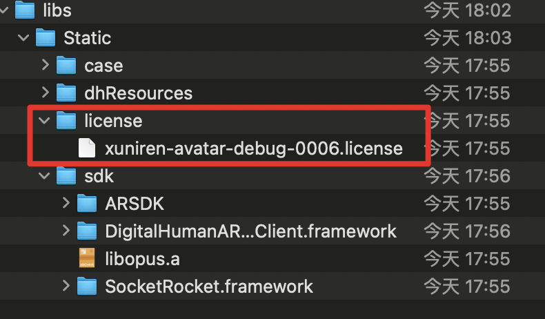
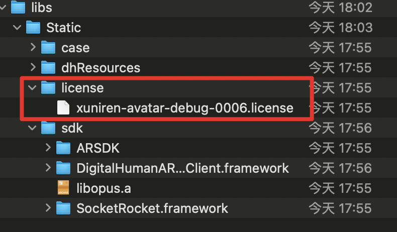

Anna Wintour steps away as editor-in-chief of American Vogue For one of the most prominent names in global fashion, this is not the end of her role but rather an elevation Edward Helmore in New York Thu 26 Jun 2025 21.13 BST Share Anna Wintour, one of the most prominent names in global fashion, is seeking a new head of editorial content at American Vogue, the magazine she has directed for 37 years. British-born Wintour, 75, made the announcement at a staff meeting on Thursday. But hiring a new head of editorial content at American Vogue does not mean the end of her role – rather, it is an elevation. Industry journal the Business of Fashion said the move came in response to how Wintour’s role has expanded in recent years to oversee all the titles in the Condé Nast fold, from American Vogue, otherwise known as “big Vogue”, and its eight international Vogue subtitles, as well as Vanity Fair, GQ, Wired and others, but excepting the New Yorker. “Anybody in a creative field knows how essential it is never to stop growing in one’s work. When I became the editor of Vogue, I was eager to prove to all who might listen that there was a new, exciting way to imagine an American fashion magazine,” Wintour told Vogue staff, according to the publication. “Now, I find that my greatest pleasure is helping the next generation of impassioned editors storm the field with their own ideas, supported by a new, exciting view of what a major media company can be.” Under that structure, a new head of editorial content will report to Wintour as global editorial director of Vogue. Wintour will also continue as chief content officer of parent company Condé Nast.
The announcement brings to end rumors that have swirled for years that the fashion industry’s undisputed queen might step aside at one of its most influential publications. After various attempted putsches were put down, and a moment of uncertainty during the social justice protests of the early 2020s over representation and diversity, Wintour simply accrued more power. Roger Lynch, chief executive of Condé Nast, said in an interview with the Wall Street Journal that Wintour has been doing three jobs since 2020 and that it made sense for her to step back from American Vogue at this time. “This will enable her to make time for everyone who needs her,” he said. But stepping aside from the day-to-day running of American Vogue may indicate that the Condé Nast company is at least considering succession plans for the inevitable post-Wintour era as a whole. Wintour joined American Vogue in 1988 after serving as editor of British Vogue. Her first issue on newsstands – November 1988 – featuring model Michaela Bercu wearing a pricey Christian Lacroix sweater and $50 Guess jeans caused a stir about what comprised “high fashion”. The answer came with the rise of the supermodels, the arrival of grunge and more. Wintour also transformed Vogue’s cover stars, going between models and celebrities from Oprah Winfrey, Madonna, Ivana Trump, Renée Zellweger, Kate Moss, Naomi Campbell, Christy Turlington, Cindy Crawford and Kim Kardashian. Who sent the wrong flowers to Donatella? … Vanessa Williams, centre, as the legendary editor. ‘Every minute at Vogue felt like an emergency’: Devil Wears Prada author Lauren Weisberger on igniting a scandal Read more Her reputation for power was enhanced by a Hollywood film, The Devil Wears Prada, that no other fashion figure could match, as well as a slew of documentaries, including The September Issue. The Devil Wears Prada, starring Meryl Streep as a fictionalised version of Wintour, cemented her image as an icy perfectionist of immense power in the fashion world. Wintour also spearheaded the transformation of the Metropolitan Museum of Art’s annual Costume Institute fundraiser to become fashion’s equivalent of Oscar night for the movie business and further turned it into a money-spinner both for the Costume Institute and for the magazine. Each year, the great and good of the celebrity world attend the Met gala, which is beamed around the world and famed for its sartorial excesses. One of the magazines under Wintour’s care in the Condé Nast empire – celebrity and culture bible Vanity Fair – recently hit the headlines after Wintour chose Mark Guiducci as its new top editor. Vogue alum uiducci, 36, will start as the magazine’s global editorial director on 30 June. He takes over from Radhika Jones, who leaves after more than seven years at the helm. Guiducci was seen as being close to Wintour and a core part of her inner circle.
 img一定要写src的属性，src属性是路径，src是source

img一定要写src的属性，src属性是路径，src是source
